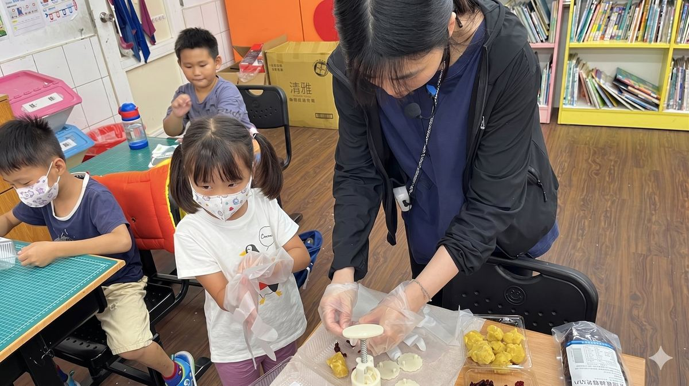
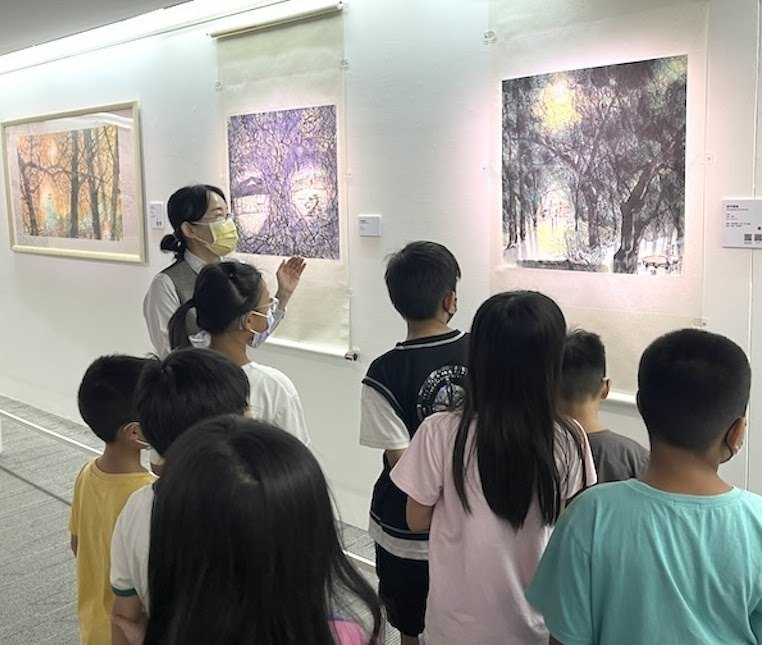
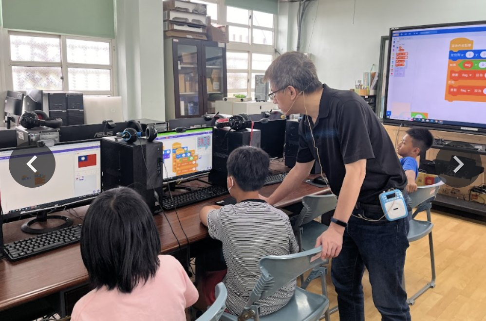
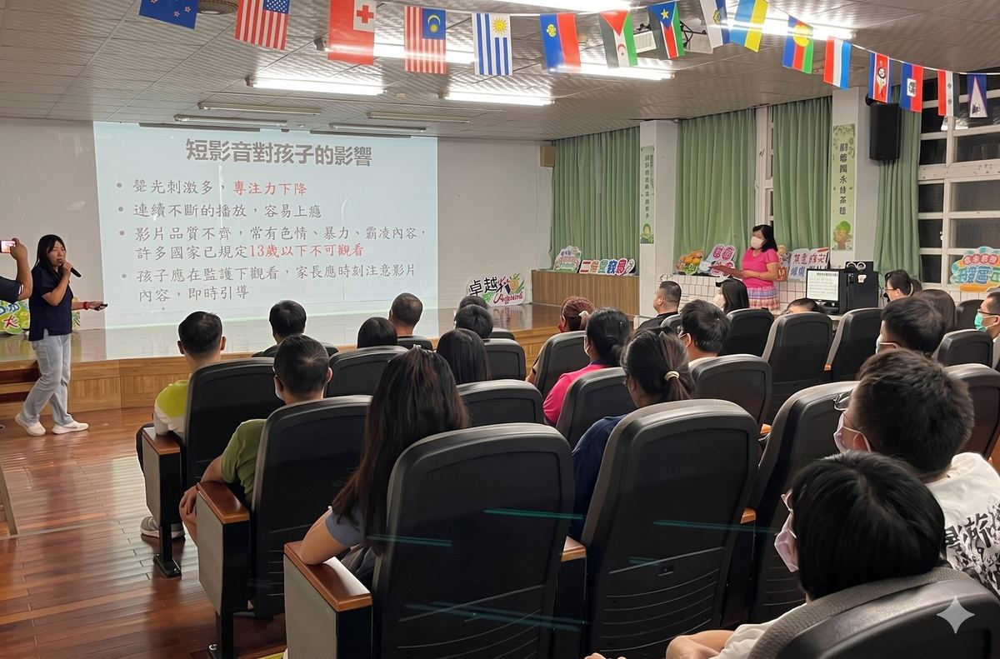
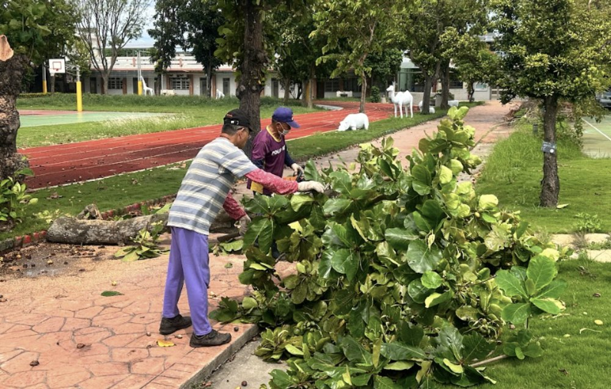

III. Photo Stories
Photo Stories
校園 Photo Story · 圖文有聲版
Seven campus moments told in two languages, read aloud by Edwin.
每篇一張照片、雙語段落，加上 SoundCloud 朗讀音檔。
Story 01 · Photo
First Graders
迎接一年級新生
Balloon arches at the school gate make the first day extra special.
Listen & Read →

Story 02 · Photo
Ingredients
月餅的材料
First graders learn to make tasty moon-cakes with simple ingredients and special moulds.
Listen & Read →

Story 03 · Photo
Art Museum
參觀美術館
A guided visit to an art museum — children listen carefully as the guide tells them about each piece.
Listen & Read →

Story 04 · Photo
Coding
電腦課寫程式
A very fun computer class — students try simple coding to create a spinning image.
Listen & Read →

Story 05 · Photo
HIV & AIDS Assembly
愛滋衛教講座
A special school-wide presentation teaches students about disease transmission and HIV/AIDS.
Listen & Read →

Story 06 · Photo
Parent-Teacher Meeting
親師座談會
Teachers and parents meet to discuss school matters, student progress and core values.
Listen & Read →

Story 07 · Photo
Trim
修剪校園樹木
Before school begins, a local service uses special equipment to take care of overgrown branches.
Listen & Read →